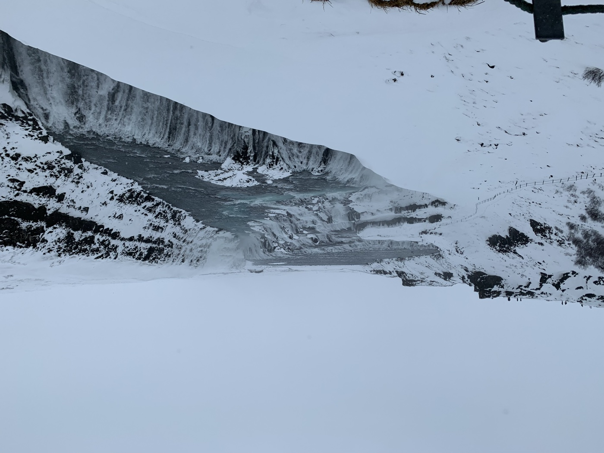
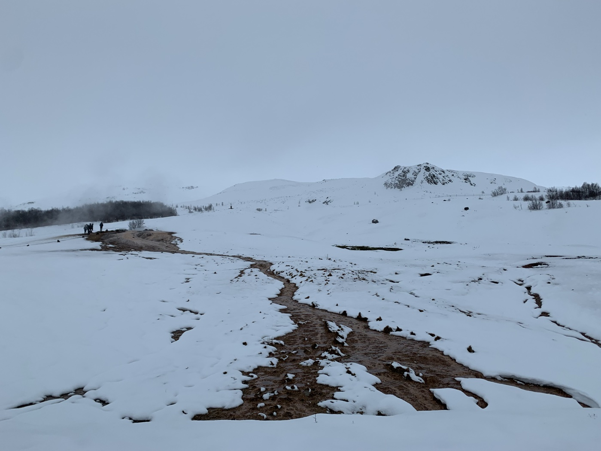
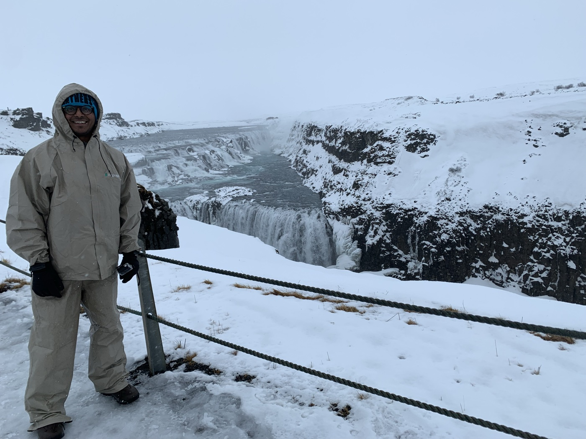
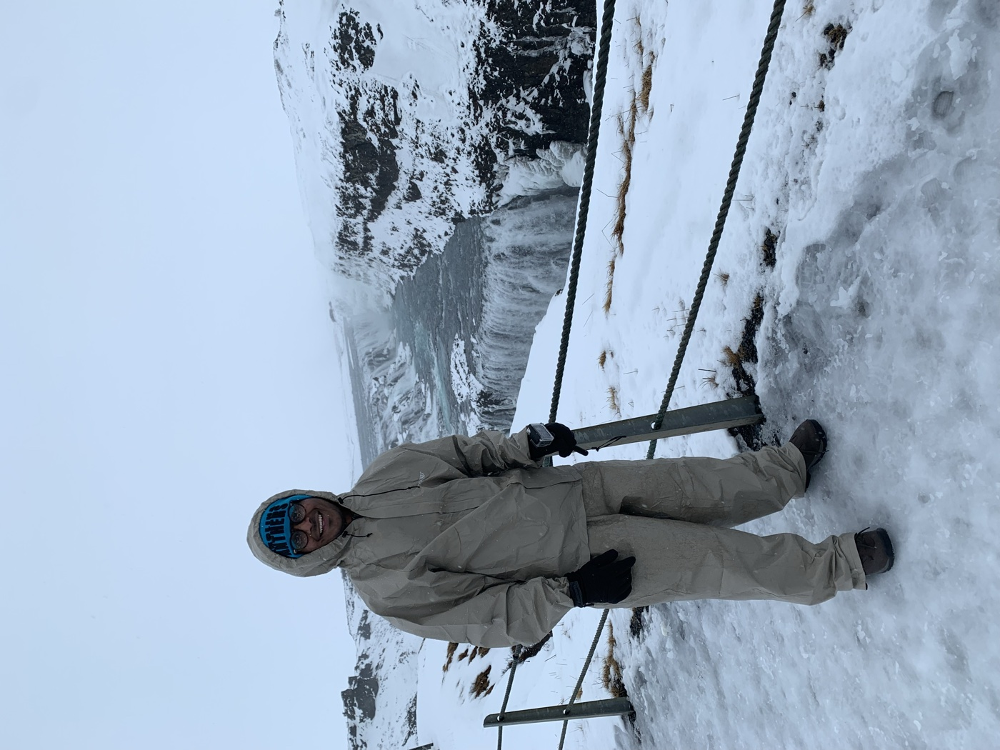
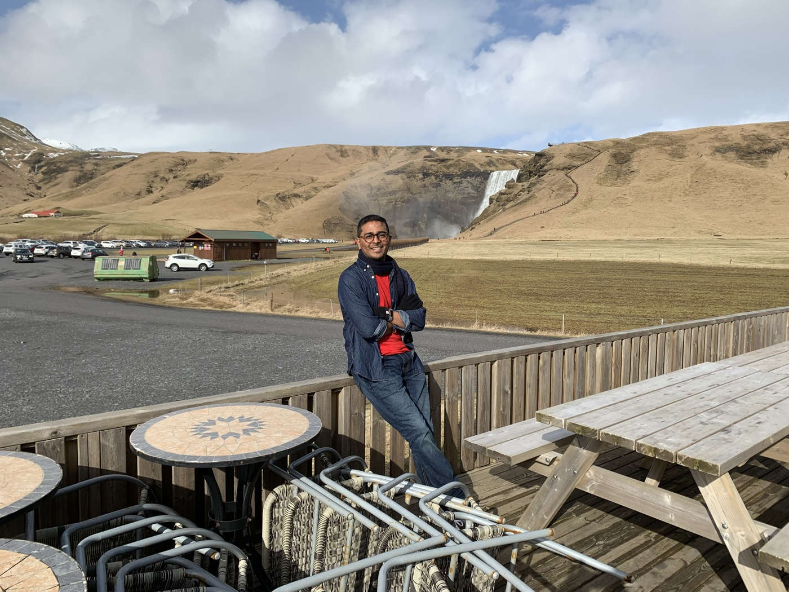
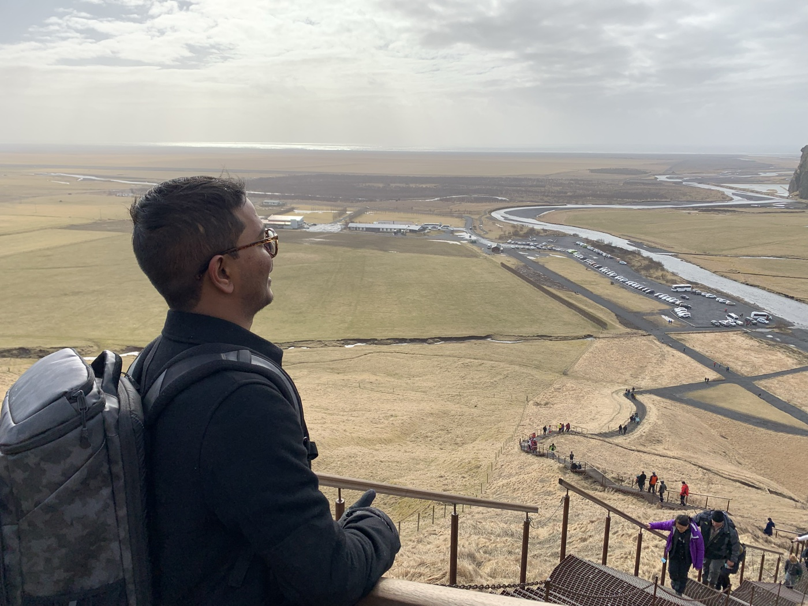
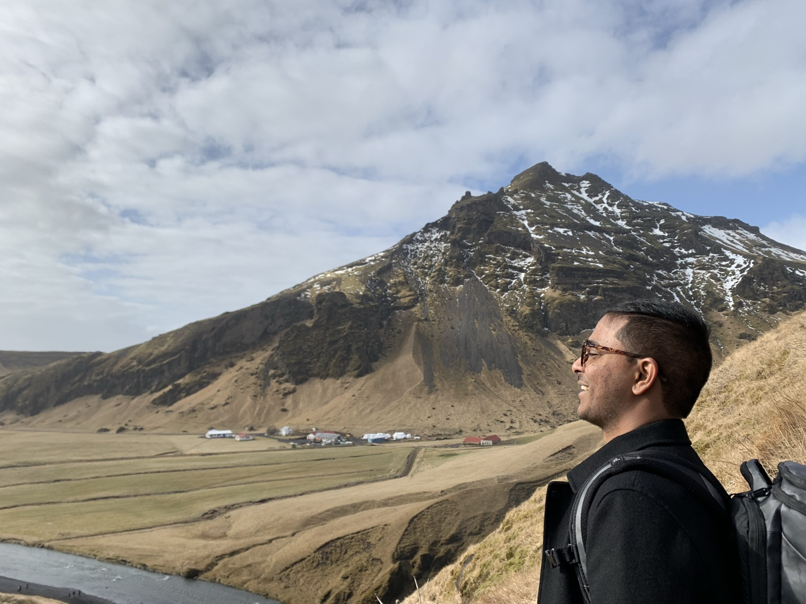
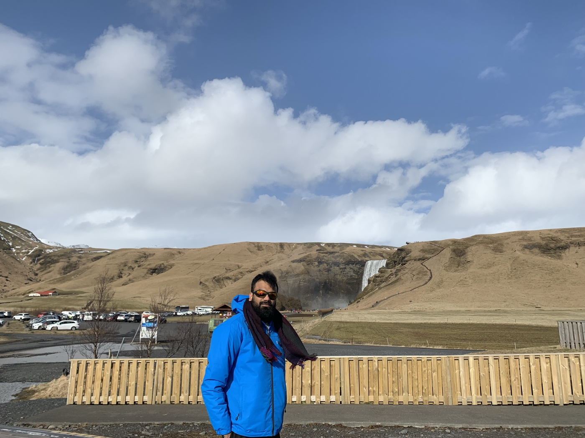
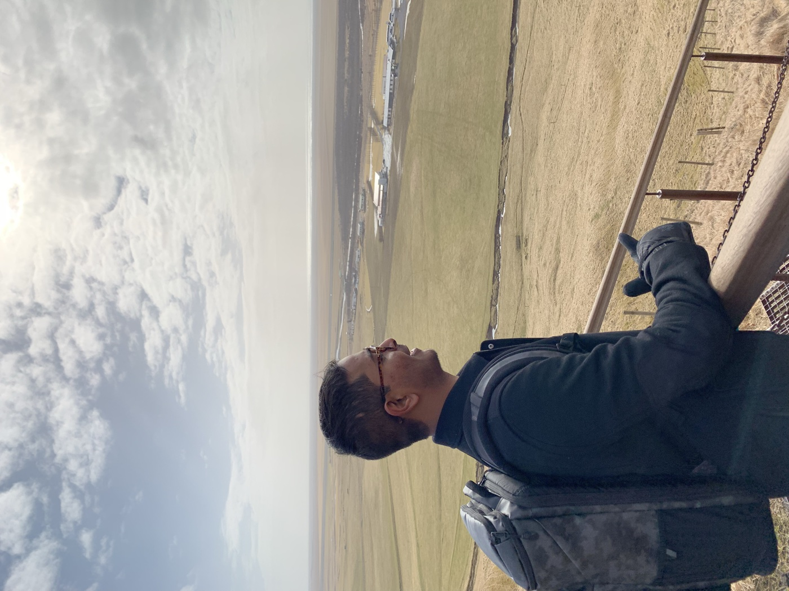
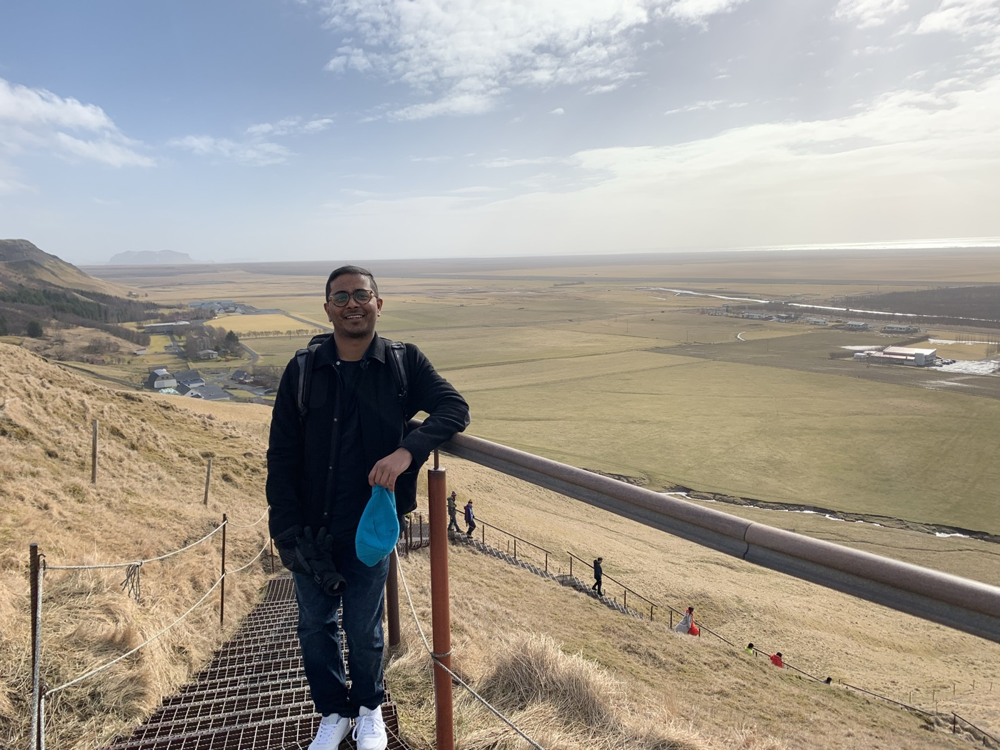

1. Touchdown at 3:55 AM
The flight landed at Keflavík at 03:55 — Iceland in full winter dark. The Voyage statues greeted us outside the terminal, and a small white VW Polo from Lotus Car Rental (38,500 ISK, winter tires, unlimited miles) became our home for five days. We rolled out onto the Reykjanes peninsula, and by dawn we were driving east toward the plateau.






2. The Golden Circle: Geysir & Gullfoss
By mid-morning the plateau was doing its thing: snow flurries over the Þingvellir rift, steam hissing off Geysir's basin, and Gullfoss roaring at ~200 m elevation — a wide horseshoe of water freezing mid-air. Cold hands, phones out, the land steaming and frozen at once.


3. Evening in Reykjavík — HI Downtown
Back over the mountains to the capital. Check-in at HI Downtown, Vesturgata 17 — a warm room with a window over the street, and the courtyard's flag-painted cows. Then a walk through the wet streets: the BONUS sign glowing neon, Hallgrímskirkja's stained glass, Skólastræti at 21:56.


4. A Capital Day
A full day around Kópavogur and the capital's west — 289 photos, the biggest day of the trip. The old harbor, the mountain Esja watching over the city, viewpoints over the fjord. Then the Polo turned south on Suðurlandsvegur.






5. The Ring Road South
The ring road unspooled under a grey sky — snowy mountain passes with sun flare, and a detour to the famous DC-3 plane wreck on the black sands of Sólheimasandur. By 20:28 the headlights were on Suðurvíkurvegur in Vík.


6. Two Nights in Vík
Hostel Vík, Suðurvíkurvegur 5 — Room 9 upstairs, key in the pen holder. Reynisfjara's black sand and basalt columns with waves crashing, the red-roofed church on its hill, Icelandic horses in the snow fields, rice cooking in the hostel kitchen. Two full nights on the south coast.


7. Jökulsárlón & Diamond Beach
Two and a half hours east to the glacier lagoon: icebergs calved from Vatnajökull drift in the grey water, then wash up on the black sand of Diamond Beach — translucent blue jewels scattered to the horizon, waves crashing over them.


8. Inside the Glacier
Ice Explorers' Super Jeep bounced across the glacier tongue to the cave mouth. Inside, the Vatnajökull ice glowed electric blue — light streaming through the ceiling, helmets and headlamps against textured walls. 194 photos and 174 clips later, it was still the best hour of the trip.


9. Blue Lagoon
West again — a drive-by of Ölfus at 21 km/h (photos from a moving car), then Grindavík. 130 photos of the milky-blue water: 39°C steam curling off the lava field into the March cold, snow on the banks, silhouettes in the warmth.


10. Last Night in Reykjavík
HI City, Sundlaugavegur 34. Lækjargata at 23:00, the harbor the next morning, one more walk through the city — then FI623 home. 739 km on the little Polo, 1,257 files in the archive, and a story that started at 3:55 AM.